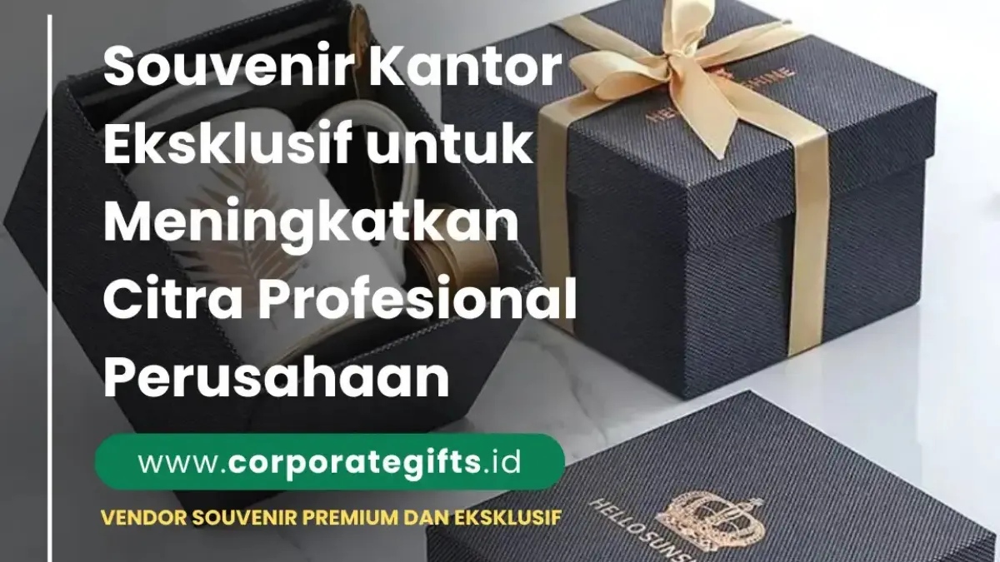

Corporate Gifts ID - Dalam dunia bisnis modern yang sangat kompetitif, souvenir kantor eksklusif bukan lagi sekadar bentuk ucapan terima kasih atau hadiah seremonial belaka. Lebih dari itu, cinderamata korporat kini telah bertransformasi menjadi pilar strategis dalam membangun identitas brand, mempererat ikatan emosional dengan karyawan, serta mempertegas reputasi profesional di mata klien dan mitra bisnis strategis.
Souvenir kantor eksklusif hadir dalam wujud hadiah korporat berkualitas premium, seperti notebook agenda kulit custom, set pulpen metal berukir nama, hingga tumbler stainless vacuum insulated. Melalui perpaduan desain elegan, pemilihan material bermutu tinggi, dan kemasan hardbox mewah, setiap produk mampu menyampaikan pesan bahwa perusahaan Anda mengedepankan kualitas dan perhatian terhadap detail di setiap kesempatan.
Poin Kunci Souvenir Kantor Eksklusif:
- Representasi Kredibilitas: Cinderamata premium memancarkan nilai integritas dan standar profesionalitas perusahaan kepada klien eksternal.
- Retensi & Motivasi Karyawan: Apresiasi melalui cinderamata berkualitas terbukti meningkatkan rasa memiliki dan loyalitas tim internal.
- ROI Branding Berkelanjutan: Produk fungsional yang digunakan sehari-hari memberikan paparan visual merek dalam jangka panjang.
Mengapa Souvenir Kantor Berperan Penting dalam Branding Perusahaan
Investasi pada pengadaan souvenir kantor membawa dampak multidimensi bagi ekosistem bisnis perusahaan. Berikut adalah tiga peran fundamental cinderamata eksklusif bagi penguatan citra korporat:
1. Membangun Citra Profesional di Mata Klien dan Mitra Bisnis
Souvenir eksklusif seperti agenda berbahan kulit sintetis premium atau pena rollerball logam custom menjadi representasi nyata dari kultur dan standar kualitas institusi Anda. Saat diserahkan dalam sesi pertemuan bisnis atau penandatanganan kerja sama (MoU), cinderamata tersebut menciptakan persepsi positif bahwa perusahaan memperlakukan setiap relasi dengan penuh rasa hormat dan keseriusan.
2. Meningkatkan Loyalitas dan Rasa Bangga Karyawan
Memberikan souvenir kantor kepada tim internal, misalnya pada momen pisah sambut rekan kerja, program penghargaan loyalitas masa kerja, atau perayaan pencapaian target tahunan, mampu memupuk rasa kebersamaan yang mendalam. Sentuhan apresiasi berkelas memiliki nilai emosional tinggi yang memotivasi karyawan untuk terus berdedikasi.
3. Menjadi Media Promosi Elegan yang Berdaya Guna Tinggi
Berbeda dengan materi promosi sekali pakai seperti brosur atau flyer kertas, souvenir kantor fungsional dengan aplikasi logo perusahaan melalui teknik emboss deboss atau grafir laser halus memberikan paparan brand secara natural. Klien atau rekan kerja yang menggunakannya di meja kerja kantor akan senantiasa teringat pada kredibilitas merek Anda.
Jenis Souvenir Kantor Eksklusif yang Banyak Diminati
Terdapat ragam pilihan item cinderamata yang dapat disesuaikan dengan profil penerima dan skala anggaran perusahaan. Berikut beberapa kategori terpopuler yang menjadi pilihan utama klien korporat:
1. Gift Set Premium Custom
Paket souvenir custom VIP yang mengombinasikan buku agenda eksklusif, pena metal, dan tumbler stainless di dalam satu kemasan hardbox mewah berbusa beludru adalah opsi paling elegan. Format bundling ini sangat fleksibel untuk cinderamata pimpinan, tamu VIP, maupun bingkisan akhir tahun korporat.
2. Souvenir Ramah Lingkungan (Eco-Friendly)
Tren cinderamata ramah lingkungan kian digemari seiring tingginya komitmen korporat terhadap isu keberlanjutan dan ESG. Produk seperti tumbler berbahan kayu bambu alami, tote bag kanvas daur ulang, atau buku catatan dari kertas daur ulang memberikan impresi bahwa perusahaan Anda berwawasan lingkungan dan bertanggung jawab secara sosial.

Koleksi souvenir kantor eksklusif berdesain elegan untuk memperkuat citra kredibilitas institusi.
3. Plakat Kristal dan Pajangan Meja Elegan
Untuk agenda resmi seperti serah terima jabatan, perpisahan direksi, atau penganugerahan penghargaan kemitraan, plakat kristal optik atau pajangan kayu dengan pelat kuningan etsa menjadi pilihan berwibawa yang layak dipajang di ruang kerja eksekutif.
4. Powerbank dan Smart Gadget Custom
Di era digital, perangkat teknologi penunjang produktivitas seperti powerbank fast charging dan flashdisk kartu custom dengan cetak UV full-color menjadi hadiah yang sangat disukai para profesional muda karena kepraktisannya.
5. Tumbler Stainless SUS304 dan Botol Termos Mewah
Selain mendukung gaya hidup sehat dan mengurangi sampah plastik sekali pakai, botol minum vacuum insulated dengan sentuhan warna matte elegan (seperti hitam doff, emerald green, atau navy) memberikan nuansa eksklusif yang sangat relevan untuk kebutuhan harian di kantor.
Tabel Perbandingan Kategori Souvenir Kantor Eksklusif
Berikut rangkuman perbandingan kategori souvenir kantor eksklusif beserta rekomendasi penggunaannya:
| Kategori Souvenir | Pilihan Item Populer | Karakteristik Material | Rekomendasi Momen / Target |
|---|---|---|---|
| Executive Gift Set | Agenda kulit, pulpen metal, tumbler SUS304 | Kulit sintetis PU, stainless steel, hardbox beludru | Klien VIP, Direksi, Tamu Kehormatan MoU |
| Eco-Friendly Collection | Tumbler bambu, notebook daur ulang, tote bag blacu | Serat bambu alami, kertas daur ulang, kanvas katun | Gathering tahunan, kampanye ESG, seminar keberlanjutan |
| Smart Office Tech | Powerbank 10.000mAh, flashdisk kartu, wireless charger | Aluminium alloy, polikarbonat tahan panas, print UV | Onboarding karyawan baru, training IT, hadiah sales |
| Award & Recognition | Plakat kristal, trofi kayu etsa, desk clock metal | Kristal optik bening, kayu jati/mahoni, pelat kuningan | Masa bakti kerja, purna tugas direksi, partner award |
Souvenir untuk Berbagai Kebutuhan dan Momen Kantor
Ketepatan memilih souvenir sangat ditentukan oleh konteks acara dan profil audiens yang dituju. Berikut adalah tiga skenario utama distribusi cinderamata kantor:
1. Souvenir untuk Internal Karyawan
Hadiah seperti paket onboarding kit karyawan baru, merchandise seragam gathering kantor, atau cinderamata pisah sambut rekan kerja memberikan kehangatan emosional serta menegaskan bahwa dedikasi setiap individu diapresiasi secara layak oleh manajemen.
2. Souvenir untuk Klien dan Mitra Bisnis Strategis
Dalam kemitraan B2B, menjaga relasi jangka panjang merupakan aset berharga. Cinderamata seperti gift set eksekutif atau hampers premium pada momen hari raya memperlihatkan etika bisnis berkelas yang memperkuat kepercayaan mitra usaha.
3. Souvenir untuk Acara Promosi, Konferensi, dan Seminar
Untuk kegiatan eksternal skala besar, utamakan produk fungsional seperti tote bag kanvas premium, blocknote ring spiral, dan paket seminar kit custom berlogo tajam yang mudah dibawa pulang oleh para peserta simposium.
Kriteria Souvenir Kantor yang Ideal
Agar anggaran pengadaan menghasilkan dampak branding yang optimal, pastikan cinderamata yang dipilih memenuhi kriteria pokok berikut:
- Mewakili Identitas Visual Brand: Keselarasan warna korporat (corporate color palette), ketepatan rasio logo, serta keterbacaan tagline resmi.
- Fungsionalitas Nyata: Pilih produk yang memiliki kegunaan praktis sehari-hari agar tidak berakhir menumpuk di laci penyimpanan.
- Kualitas Material dan Presisi Finishing: Gunakan teknik pengerjaan permanen seperti grafir laser atau cetak UV oven yang tahan gores dan tidak mudah pudar.
- Kemasan (Packaging) Berstandar Eksklusif: Kemasan luar adalah kontak visual pertama penerima; hardbox bermotif rapi dan berpita menambah prestise hadiah secara signifikan.
Tips Memilih Vendor Souvenir Kantor yang Tepat
Keberhasilan proyek pengadaan cinderamata korporat bergantung pada keandalan vendor pelaksana. Berikut panduan ringkas dalam menyeleksi mitra pengadaan resmi:
- Periksa Portofolio dan Rekam Jejak Klien: Pastikan vendor berpengalaman menangani instansi BUMN, kementerian, atau korporasi multinasional.
- Fasilitas Mockup Gratis dan Proofing Sampel: Vendor profesional selalu menyediakan digital mockup 3D atau approval sampel fisik sebelum produksi massal dijalankan.
- Kepastian Jadwal Produksi dan Legalitas Faktur Pajak: Pilih penyedia berbadan hukum resmi yang mampu menerbitkan Faktur Pajak (PPN) dan menjamin pengiriman tepat waktu dengan garansi cacat produksi.
Souvenir Kantor dan Dampaknya terhadap Reputasi Bisnis
Secara jangka panjang, konsistensi institusi dalam memberikan cinderamata berkualitas mencerminkan komitmen terhadap keunggulan di segala aspek operasional. Cinderamata kantor yang dirancang dengan selera tinggi menjadi duta visual yang terus berbicara mengenai kredibilitas, kemapanan, dan profesionalisme brand perusahaan Anda di mana pun produk tersebut digunakan.
Kesimpulan & Rekomendasi Pengadaan
Souvenir kantor eksklusif adalah jembatan relasi yang memadukan estetika desain, nilai guna praktis, dan strategi branding korporat yang berdampak nyata. Mulai dari paket apresiasi karyawan internal hingga cinderamata penunjang kemitraan bisnis tingkat tinggi, pemilihan produk yang berkelas akan senantiasa mengukuhkan posisi institusi Anda sebagai entitas yang unggul dan tepercaya.
Sedang merencanakan pengadaan souvenir kantor atau gift set VIP untuk perusahaan Anda? Konsultasikan kebutuhan paket cinderamata instansi Anda bersama tim spesialis kami di layanan pengadaan souvenir kantor CorporateGifts.ID untuk mendapatkan penawaran harga terbaik dan sampel digital gratis.